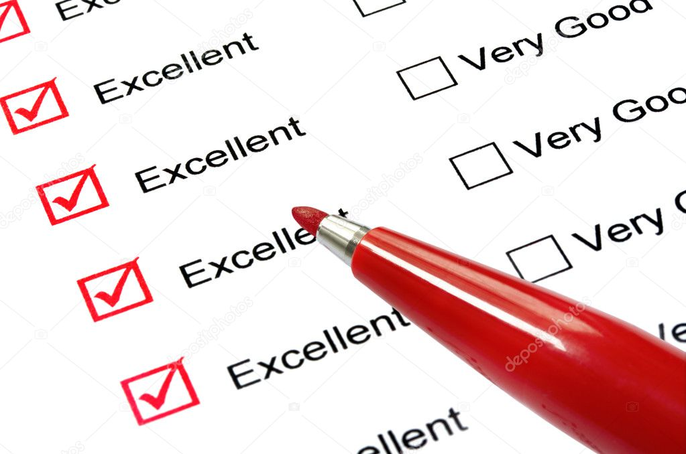

Faces de un estudio ambiental
Etapa 1: Identificación y clasificación ambiental

En esta etapa se define la necesidad de realizar una evaluación de impacto ambiental de detalle y el tipo de categoría ambiental requerido. Se usa una evaluación preliminar basada en información, tal como la siguiente:
-- Descripción del proyecto en sus aspectos relevantes y pertinentes al estudio, incluyendo la legislación ambiental aplicable.
-- Descripción del área de influencia con la definición del área involucrada y la descripción, en forma general, del medio ambiente relacionado con el proyecto .
-- Medidas de mitigación posibles de utilizar para darle sostenibilidad al proyecto.
Se requiere identificar la categoría ambiental del proyecto mediante observaciones claras y concisas. Es crucial determinar el nivel y alcance de los estudios necesarios, centrándose en los impactos reales generados por las características del proyecto y las condiciones ambientales circundantes. La participación en procesos formales se hace necesaria. Se debe establecer una estrategia de gestión de impactos ambientales para abordar de manera efectiva las implicaciones medioambientales del proyecto.
RESULTADOS DE LA ETAPA
Es necesario determinar si la acción propuesta conlleva impactos ambientales significativos, tanto negativos como positivos, y evaluar si su incorporación a procesos formales de evaluación ambiental es requerida en función de dichos impactos. Para lograrlo, se debe definir el nivel de detalle y cobertura necesario en la evaluación ambiental, enfocándose en los impactos reales derivados de las características de la acción y las condiciones ambientales en su entorno, es decir, su área de influencia.
Etapa 2: Preparación y análisis
Esta etapa corresponde a la aplicación concreta del alcance del estudio definido para un proyecto determinado. Aquí se revisan los impactos significativos, previamente identificados en la evaluación de los aspectos ambientales, especialmente aquellos de carácter negativo, y se establecen sus respectivas medidas de mitigación y compensación. Su importancia radica en el análisis detallado de los impactos ambientales, aspecto fundamental para la posterior revisión y definición de requisitos de mitigación, seguimiento y control. Para ello se debe:
Describir el ambiente. Se trata de analizar las condiciones ambientales, que pueden ser afectadas por la acción humana, al nivel de detalle necesario. Si existe información disponible que no caracteriza el ambiente afectado o no proporciona elementos para evaluar los impactos e implementar las medidas de mitigación y seguimiento, entonces no amerita ser incluida en el análisis.
Pronóstico y análisis de impactos ambientales. Este análisis se realiza sobre la base de revisar el carácter significativo de los impactos, poniendo especial atención en aquellos que presentan un nivel crítico o irreversible. Por ejemplo, se analizan los impactos: a) positivos y negativos, b) primarios e inducidos, c) de corto y largo plazo, d) acumulativos, y e) sinérgicos. Una vez conocidos y evaluados los impactos éstos se valoran y jerarquizan para seleccionar las medidas de mitigación y preparar el plan de manejo punto de vista ambiental.
Plan de manejo ambiental. En gran medida el cumplimiento de los programas de protección ambiental depende de las medidas de mitigación y compensación de los impactos significativos. Estas, en definitiva, son las que hacen viables las acciones humanas desde el punto de vista del medio ambiente. Entre las medidas de mitigación que se pueden considerar, están las siguientes:
• Disminuir el impacto al limitar su magnitud
• Rectificar el impacto al restaurar o rehabilitar el ambiente
• Eliminar el impacto con acciones de protección y mantenimiento
La mitigación es un proceso continuo durante el proceso de evaluación de impacto ambiental, aplicado con la idea de disminuir o evitar los impactos significativos. Se inicia desde que se identifica y se ajusta durante toda la fase de diseño.
La mitigación es un proceso continuo durante el proceso de evaluación de impacto ambiental, aplicado con la idea de disminuir o evitar los impactos significativos. Se inicia desde que se identifica y se ajusta durante toda la fase de diseño.
RESULTADOS DE LA ETAPA
En esta fase de la evaluación ambiental, se comienza detallando la acción propuesta y el estado actual del entorno en la zona de influencia, estableciendo así una línea base. Posteriormente, se realiza un análisis exhaustivo de los posibles impactos ambientales, prestando especial atención a aquellos que puedan ser críticos o irreversibles. Se emplean metodologías estructuradas para caracterizar estos impactos, considerando sus diversas dimensiones. La valoración y jerarquización de los impactos se lleva a cabo, priorizando su importancia relativa. Finalmente, se seleccionan medidas de mitigación y se elabora un plan de manejo destinado a gestionar de manera efectiva los impactos identificados, con el objetivo de asegurar la sostenibilidad y reducir al mínimo los efectos adversos en el entorno ambiental.
Etapa 3: Calificación y decisión
Esta etapa corresponde a la revisión formal, por parte de la autoridad, de los estudios de impacto ambiental. Se busca verificar la adecuación y pertinencia de las medidas propuestas para el manejo de los impactos negativos significativos derivados de las acciones específicas.
La importancia de esta etapa radica en el carácter decisorio ya que se determina la aprobación, rechazo o solicitud de modificaciones a los estudios. Se determina en gran medida la efectividad del proceso de EIA y la conveniencia de la adopción de las medidas de mitigación y seguimiento contempladas en los estudios respectivos. Se busca asegurar que las acciones se ejecutarán en forma ambientalmente adecuada.
RESULTADO DE LA ETAPA
La revisión se enfoca en calificar la calidad del documento para saber si efectivamente cumple con:
A. Los aspectos formales y administrativos.
B. Los requisitos de calidad técnica mínima.
C. La sostenibilidad ambiental del proyecto.
Etapa 4: Seguimiento y control
Esta etapa corresponde a la verificación de la ejecución del plan de manejo ambiental en la fase de implementación posterior de cada proyecto. Se establece si efectivamente las acciones se encuentran acordes con los criterios de protección ambiental que rigen el proceso de EIA(Estudio Impacto ambiental), con el área de influencia reconocida y con la normativa ambiental vigente.
La importancia de esta etapa radica fundamentalmente en el aseguramiento de que tanto la acción y todas las actividades asociadas a ella, así como las medidas de mitigación comprometidas y los mecanismos de seguimiento y control establecidos, den cuenta satisfactoriamente de la protección del medio ambiente. En esta etapa se verifica la eficacia del análisis ambiental y se regula el cumplimiento de los compromisos adquiridos por el responsable de la acción.
RESULTADO DE LA ETAPA
El monitoreo ambiental integral del proyecto abarca la evaluación continua de la calidad del agua, aire y suelo, así como el seguimiento de la generación de residuos. Se llevan a cabo muestreos de flora y fauna, utilizados como bioindicadores para evaluar el impacto sobre la biodiversidad. Los informes periódicos detallan la situación ambiental del proyecto, destacando la evolución del cumplimiento de las medidas de protección establecidas. Además, se incluyen análisis sobre la evolución de aspectos socioculturales vinculados al entorno del proyecto. En caso de ser necesario, se realizan estudios ambientales complementarios para abordar cualquier aspecto adicional que surja durante la implementación, garantizando así una gestión ambiental completa y adaptable a las necesidades emergentes.
El estudio de impacto ambiental es el informe que documenta el proceso de evaluación de impacto ambiental y sus distintas etapas. Contiene el análisis, pronóstico y medidas que se toman para que una acción en particular sea compatible con la protección del medio ambiente. Existen diversos tipos de estudios de impacto, los que responden a las características de los proyectos, del ambiente afectado y de las exigencias de las instituciones y países. En los países también se les designa con distintos nombres y categorías de análisis.
El establecimiento de una política es una base sólida sobre la cual construir un proceso de evaluación de impacto ambiental. Dicha política puede expresar la determinación de estimular y reforzar la protección preventiva como un medio de salvaguardar la calidad ambiental y de vida de la población. Se establecen así las bases de la gestión para enfrentar situaciones ambientales no deseadas, creando un marco sobre el cual actúan los instrumentos que se diseñen para tales efectos.
La evaluación ambiental compromete a la comunidad en el desarrollo de las acciones proyectadas, recoge tempranamente las preocupaciones ambientales existentes, evita los efectos negativos y/o indeseados sobre el entorno, y previene la generación de conflictos debido al desarrollo de una nueva actividad en una localidad determinada. De esa manera, se incrementa la calidad de las decisiones, particularmente con la entrega de información sobre situaciones no deseadas por la comunidad, derivadas del emprendimiento de nuevos proyectos o actividades.
metodologias de estudios ambiental